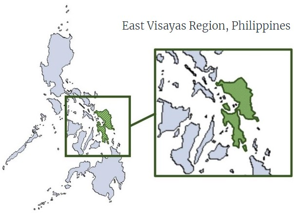

Deep Learning Approach in
Sea Surface Height Forecasting
A thesis on the use of machine learning for sea surface height (SSH) forecasting
and its applicability in coastal flood advisory and risk assessment.
The Philippines is one of the most natural disaster-prone countries in the world, and the most problematic are the year-round typhoons that cause devastating landslides and flooding. Arguably the most exposed region due to its positioning and typical typhoon pathing is the Eastern Visayas region. According to a report from the Filipino government website, 48% (€850 million) of the total damage cost and losses resulting from the Philippines most destructive typhoon in recent decades, Typhoon Yolanda, were incurred in Eastern Visayas. This nation’s, and consequently this region’s, vulnerability is expected to worsen substantially over the coming decades as a result of global rising temperatures. This is particularly catastrophic for a country ranking 104th globally in terms of the Notre Dame Global Adaptation Initiative (ND-GAIN) index which quantifies the coastal and energy infrastructure's exposure to climate-related disasters. There is no early flood warning system in the Philippines and local governments are having to rely on help from abroad to set up early flood warning systems that are not yet fully developed nor in use.
This thesis explores a machine learning approach to sea surface height forecasting with a spatial component that spans a portion of the Philippines that covers Eastern Visayas, a location chosen for the aforementioned reasons. Satellite data covering the year 2017 on the relevant atmospheric and marine variables from the region is collected for training and testing several neural networks’ ability to forecast the last 4 weeks of sea surface height. The proposed deep learning models for this consist of multiple variations of Long Short-Term Memory networks (LSTMs) and Gated Recurrent Unit networks (GRUs), which are both types of Recurrent Neural Networks (RNNs), as well as one-dimensional Convolutional Neural Networks (CNNs). Their performance is compared with the use of multiple Key Performance Indicators (KPIs) commonly used with machine learning.
The inclusion of an attention layer to aid with the spatial component of the dataset is also tested to evaluate its impact on the overall performance of the model. The structural complexity of the neural network that produces the best performing model is increased to see if there is further improvement to an extent that justifies the sacrifice in efficiency of the model. Results show that a bidirectional GRU network of high complexity produces the best performing model with the mean squared error (MSE) of its forecast being 0.241. Having singled out the optimal parameters that result in the best performing network, the thesis is brought to a close with some discussion on a few of the important improvements and next steps required to take to build on these results and develop an early warning system that could be applicable and valuable in real-world scenarios.